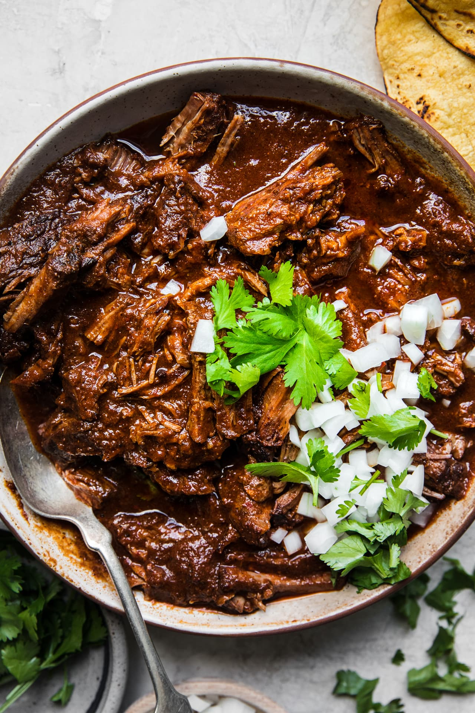

Birria Beef

Birria style beef is a wonderful recipe to make on a
weekend day, when you have time to just let the
beef braise slowly—good old low-and-slow—and
fill your home with its deeply spiced, wonderfully
heady aromas. Though you will need to set aside some
time, you won't need to make any special grocery runs
for the ingredients.
Ingredients
- Dried Guajilo Chiles - 2
- Dried Chiles de Arbol - 3
- Cinnamon - 1 tsp
- Oregano - 2 tsp
- Cumin - 2 tsp
- Bay leaves: 2
- Chuck Roast - 3lbs
- Large onion
- Garlic clove - 4 (smashed)
- Beef stock - 2 cups
- White vinegar - 1 Tbsp
- Can of fire roasted tomatoes - 14.5 oz
- Kosher salt - 1 1/2 Tbsp
- Ground pepper - 2 tsp
- Extra virgin olive oil - 2 Tbsp
Steps
- Cut open the dried chiles with kitchen scissors
or a knife and discard the seeds. Heat a large
skillet over medium high heat. Toast the dried
chiles for 4 minutes, moving them occasionally so
they don't burn, turn heat off.
- Cover the chiles with 2 inches of water. Brin the
water to a boil over high heat. Once the water begins
to boil, turn the heat off and let the chilis soak until
softened, about 15 minutes.
- Meanwhile, Preheat the oven to 350℉
- Pat the beef dry with a paper towel and season the meat with salt and pepper.
- In a large dutch oven heat the oil over medium high heat.
Working in batches, cook the meat on all sides until browned,
about 15-18 minutes total. Transfer the meat to a plate.
- In the same pot, reduce the heat to medium and add the
onion wedges. Cook until onions are browned on both sides,
about 4 minutes. Add the garlic and toss until fragrant, about
1-2 minutes. Add the cinnamon, oregano, cumin, bay leaves,
and ginger to the pan, cook for 1 minute, until fragrant.
- Deglaze the pan by adding the beef stock and vinegar and scraping
the bottom of the pan to loosen anything stuck to it. Remove the pot
from the heat and allow ingredients to cool slightly.
- Add the contents of the pot to a blender along with the canned tomatoes.
Drain the softened chilis (discarding the water used for soaking) and add
them to the blender. Blend on high until fully combined and a smooth sauce
is achieved.
- Add the beef along with the prepared chili sauce back to the dutch
oven, cover and cook on center rack until beef is tender and can be
shredded with a fork, about 3-3.5 hours.
- Remove the meat and shred it, discarding any large pieces of fat
- Serve the meat along with the remaining broth/sauce in bowls garnished with
chopped onion and cilantro, in warm tortillas, as a filling for quesadillas.
Back to top
Return to Homepage